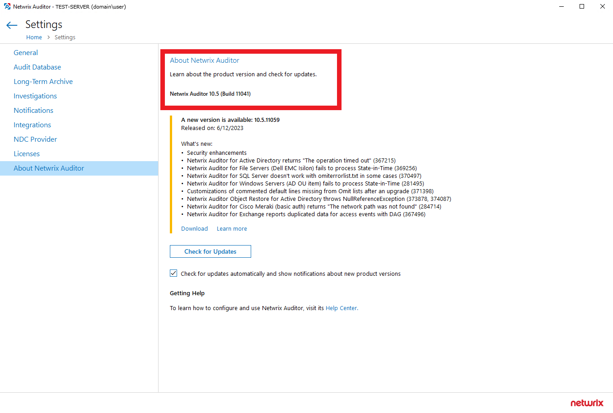

Question
How can I establish the Netwrix Auditor version I'm currently running?
Answer
To establish the version and build of your Netwrix Auditor instance, refer to the following steps:
-
In your main Netwrix Auditor menu, click the Settings button.
-
In the left pane, select About Netwrix Auditor.
-
Your current version and build will be available in the right section.
